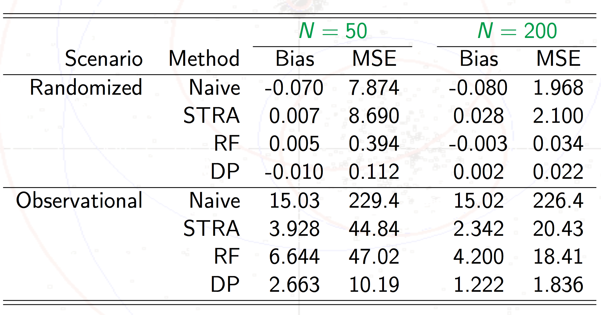
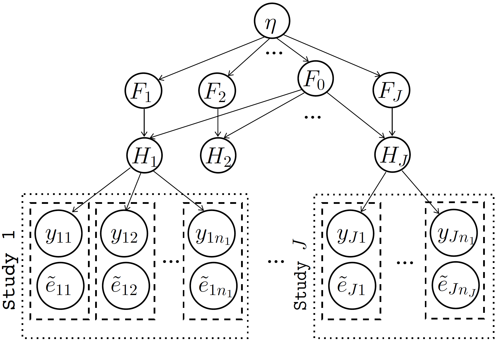
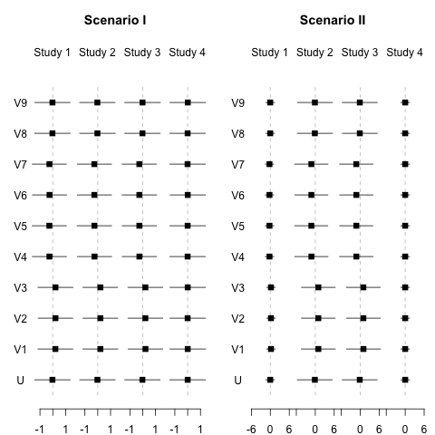
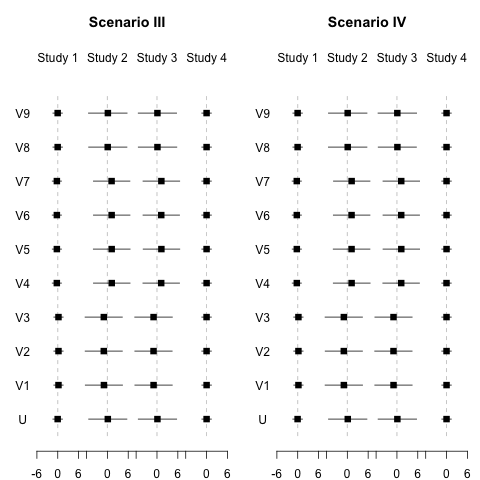
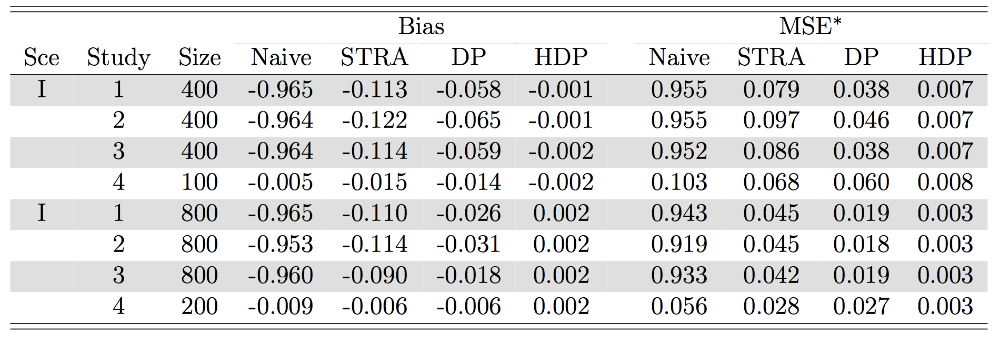
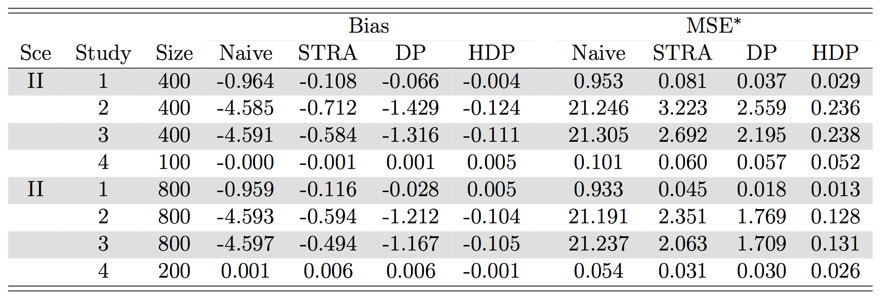
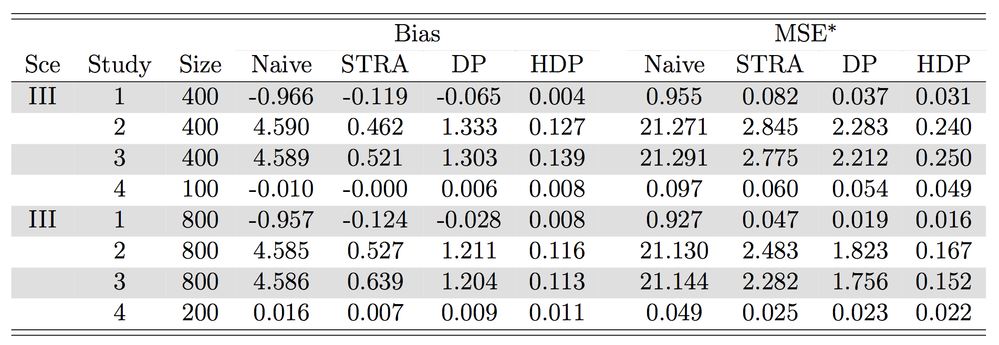
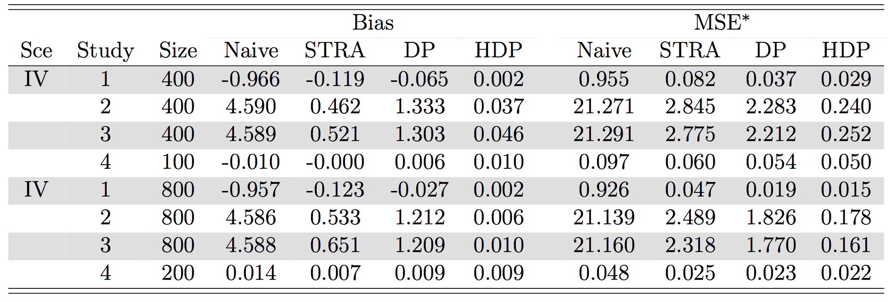

Created: 2017-06-26 Mon 08:36
\( \newcommand{\uV} {{\bf V}} \newcommand{\uv} {{\bf v}} \newcommand{\ue} {{\bf e}} \newcommand{\ualpha} {{\bf \alpha}} \newcommand{\logit} {{logit}} \newcommand{\uet} {{\bf w}} \newcommand{\ueta} {{\eta}} \newcommand{\utheta} {{\eta}} \)

Under the strong ignorable treatment assignments assumption, for all \(i\) and \(j\), \[ Z_{ij} \perp Y_{ij}(0), Y_{ij}(1) | \ue^\dagger_{ij}, S=j \]
The study specific causal treatment effect can be obtained by
In practice, we propose to first fit logistic regression models to the observational studies \(S=k\) (\(k=1,\ldots,K\))
\[\logit P(Z_{ik}=1|\uV_{ik}=\uv_{ik},S=k) = \alpha_{0,k} + \uv'_{ik}\ualpha_{1,k}\]
Müller et al. (2004)






